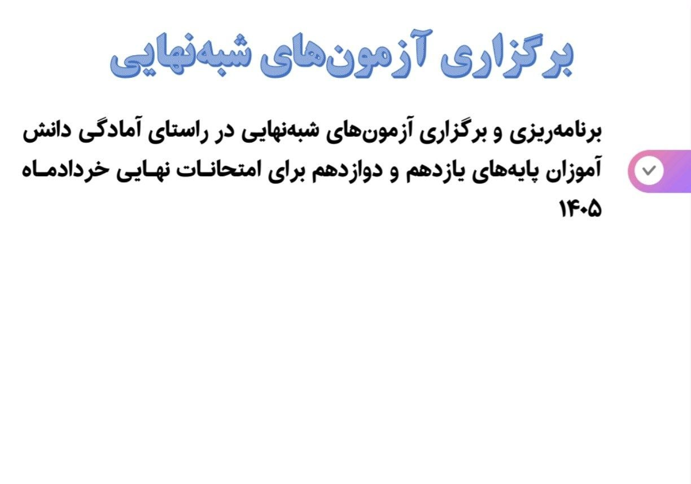
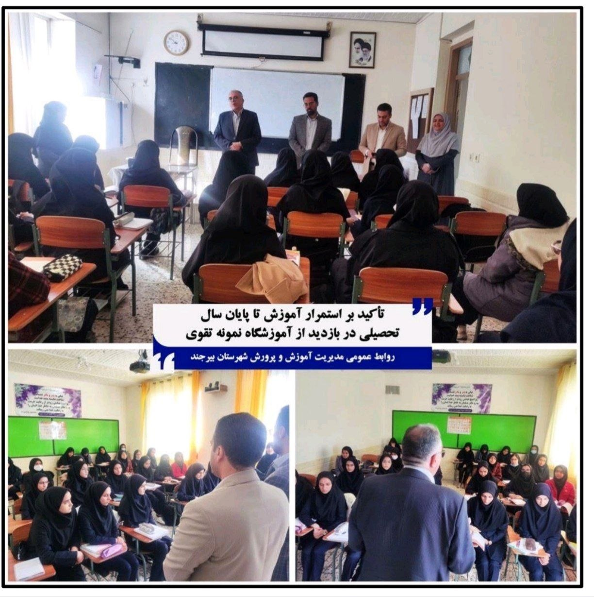

دورهٔ دوم متوسطهٔ نظری: اوج کیفیت آموزشی
پیشگیری از ترک تحصیل، توسعهٔ متوازن رشتهها، آزمونهای شبهنهایی
آمار دورهٔ دوم نظری
دورهای متمرکز بر کیفیت، عمق یادگیری و پایداری مسیر تحصیلی
اقدامات کلیدی کیفیتبخشی
چرخهٔ کامل رصد، تحلیل، مداخله و ارزیابی در دورهٔ نظری
پیشگیری از ترک تحصیل و رصد مستمر
رصد مستمر دانشآموزان در معرض خطر و اقدام بهموقع برای بازگشت آنان به کلاس درس.
توسعهٔ متوازن رشتهها
افزایش سهم رشتهٔ ریاضی-فیزیک از ۱۲.۳ به ۱۳.۴ درصد و رشد شهرستانهای دارای رشتهٔ ریاضی از ۸ به ۱۰.
تحلیل نتایج امتحانات نهایی
تحلیل دقیق نتایج نهایی برای شناسایی نقاط قوت و ضعف و تدوین برنامهٔ اصلاحی.
برگزاری آزمونهای شبهنهایی
آزمونهای شبیهساز نهایی برای آمادهسازی واقعی دانشآموزان پیش از امتحانات نهایی.
دورهٔ «مدرسهٔ تراز سند تحول»
توانمندسازی مدیران و معلمان مدارس در راستای تراز سند تحول بنیادین.
نظارت بر تصحیح الکترونیکی اوراق
نظارت دقیق بر فرآیند تصحیح الکترونیکی اوراق امتحانات نهایی برای تضمین صحت نتایج.
نگاهی از نزدیک
قابهایی از فضای آموزشی دورهٔ دوم متوسطهٔ نظری


گام بعدی سفر: فنی و حرفهای و کاردانش
قهرمانان مهارت؛ آنچه برای اولین بار در استان رقم خورد
ادامهٔ گزارش